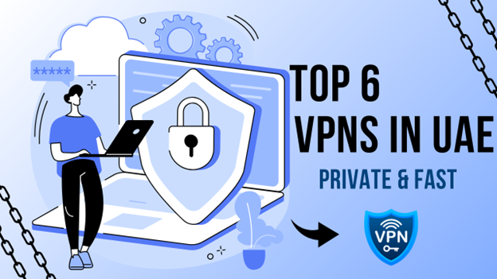
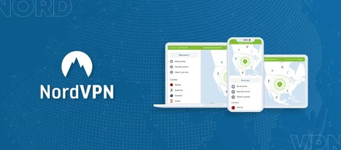
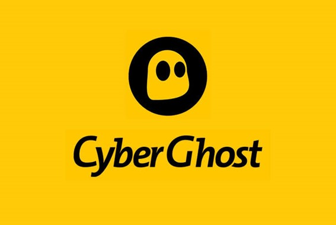
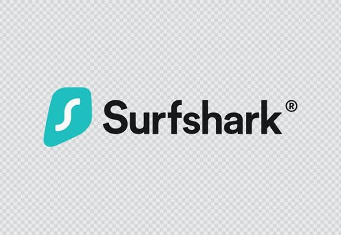
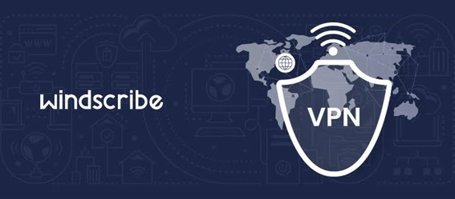
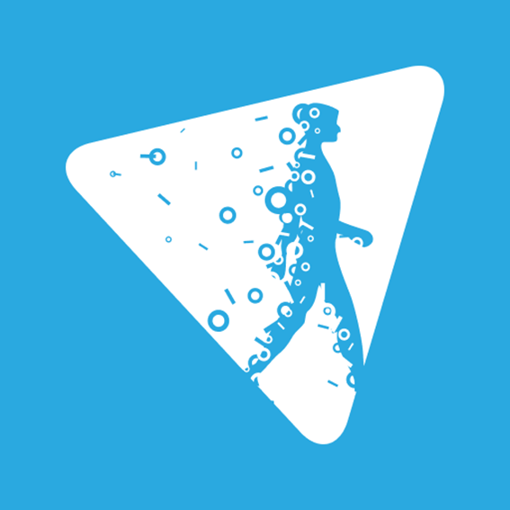
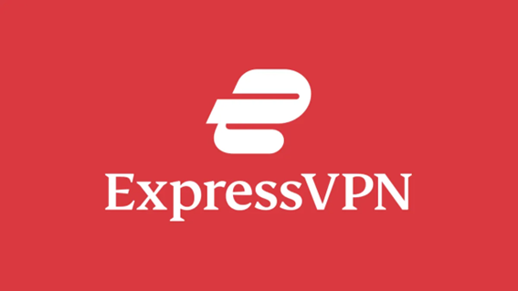

A UAE VPN is an essential tool for accessing VoIP and censored sites in a private and fast way.
Top 6 VPNs in UAE for Dubai for 2024: Reliable with High Speed

UAE doesn't have an exemplary record of internet freedom, and you may often hear this from news, blogs, and those visiting, working, or living in the country.
Using a fast and secure VPN is the best method if you want to speak to your family over WhatsApp VoIP, access censored websites, or simply stream overseas TV. According to an estimation, almost 40% of residents are already using a VPN in the UAE which depicts the importance of the use of VPNs. However, with so many options available, which one should you choose? Don’t worry! We have analyzed dozens of options to gather the top 6 UAE VPNs for Dubai and Abu Dhabi.
>Why Do You Need a VPN in UAE?
You need to use VPN in the UAE because of some reasons related to security and heavy censorship policies. Whether you're a UAE permanent citizen or just a visitor interested in traveling, the following are the main reasons why you need to use VPN in UAE:
- You'll need a VPN to unblock free video and voice calling apps like WhatsApp, Skype, and FaceTime. Changing to a virtual location is necessary to use these apps for calls and video chats.
- Websites and internet providers can see your online activities if you don't use a VPN. This may also include your personal information. So VPN use becomes essential.
- UAE has strict internet rules that include blocking many websites. A VPN makes it accessible for you to use these apps that are normally inaccessible in the country.
- A VPN can help you to stream your favorite content. A good VPN can remove these restrictions, so you can watch your favorite content as usual.
>Top 6 VPNs in UAE in 2024
We have reviewed the top 6 VPNs in UAE in 2024 for their advantages such as privacy, speed, unblocking, and of course, value for money. Check out a detailed review of all six best VPNs.
Here is the free VPN list:
>NordVPN - Best VPN Dubai & UAE to Access All VoIP Service

NordVPN is one of the biggest names for its power as a UAE VPN. NordVPN has a physical server in the country with a global fleet of over 6,000 servers which shows its excellence to go along with that. Nord's security-focused approach is great to keep you safe in Dubai and the UAE, including excellent encryption to ensure your browsing stays truly private.
Nord Threat Protection is a built-in antivirus which is a one-stop solution for security obsessives. It keeps you safe from malware, ransomware, and other digital threats. Furthermore, ad and pop-up blockers are there to let you enjoy a smooth and worry-free experience 24/7.
NordVPN also includes several other features such as DNS leak protection, two kill switches, and Onion over VPN that combine to create a seriously solid security solution. Though, its highlight is Nord's Double VPN which routes your internet traffic through two servers instead of one. It provides extra protection for both encrypting your data and changing your location twice.
Nord has a great streaming power that easily gets you through Netflix, iPlayer, and more. Its plus is that it also opens sites restricted by Etisalat and Du. Connection speed is another huge point that goes to 100s of MBs. Simply put, you won't be waiting around with apps on almost every device to stay protected wherever you are. NordVPN subscription for $3.09/month to cover up to 10 devices with a 30-day money-back guarantee if you don't want to use their services. A free 7-day trial is also included to try and then spend with complete peace of mind.
Customers are loving it for its:
- Design
- Ease of use
- Unblocking
- Performance
- Security and privacy
- Customer support
However, the design of the mobile VPN apps has its downside that doesn't work quite as well on smaller screens. This is a minor issue which needs to be addressed.
Pros and Cons
Pros:
- NordVPN is excellent at unblocking.
- It includes built-in antivirus, a password manager, and ad-blockers to provide a complete security solution.
- Usually available at under $3.50 a month at a great value.
- Slightly complex map-style interface on a phone's smaller screen.
Cons:
>CyberGhost - Fast VPN for United Arab Emirates Free

CyberGhost is a Romanian and German-based privacy giant that serves over 38 million users with its comprehensive VPN services. Its recent network boost offers around 9,200 servers in 126 locations across 100 countries. This number is huge compared to many other big names.
CyberGhost is rolling out 10 Gbps servers in more than 30 countries (and more on the way) showing how it is getting faster. Most servers are torrent-friendly that ensures immediate connection with apps for Windows, Mac, iOS, Android, and more. You can also connect up to 7 devices at a time. Connect from a phone, a game console, or a smart TV, all at once, which is a great deal. You can also get a web knowledge base, while chat and email support is on hand that helps you get through any issues.
Optional extras include dedicated IPs that cost an extra $5 billed monthly ($4 on the annual plan). Dedicated IPs allow you to access IP-restricted networks that come in handy. Dedicated IPs let other sites recognize you because you'll have the same IP address every time you visit but it is CyberGhost that enables switching between dedicated and dynamic IPs as required.
CyberGhost's website proudly boasts of a 'strict no logs policy' on its front page, and the service privacy policy that sounds great. Overall, results are positive. They block ads, trackers, and malware with optimal accurate results.
Pros and Cons
Pros:
- 7 devices can be connected
- Special streaming servers
- Servers in 100 countries to facilitate excellent speed.
- 45-day money-back guarantee
- Unblocks US Netflix, BBC iPlayer, Amazon Prime, Disney+
- Assorted small Windows app issues
Cons:
>Surfshark - Best UAE VPN in Privacy Protection

Surfshark is a simple and easy to use VPN that could provide the perfect UAE VPN experience. Surfshark boasts AES-256 encryption, Double Hop, and split tunneling like amazing features to offer great experience for staying anonymous if you want to browse restricted sites, which is a must in the UAE. Although its kill switch isn’t the most well-rounded, yet there's hardly anything to worry about. It is pretty reliable for everyone's normal day-to-day usage.
Surfshark's unlimited simultaneous connection is its core selling point that gives users freedom to log in as many devices as they want, without a drop in privacy or performance. It includes a Camouflage mode that keeps you hidden from VPN blocks and snooping UAE IPs. A unique NoBorders mode connects you to the best-performing server for an experience free from any restrictions in the area.
Surfshark has covered it for anyone looking to stream, enabling access to Netflix, iPlayer, Hulu, and more without any buffering thanks to class-leading speeds. It won't be wrong to call it a much better streaming VPN than many more expensive rivals. It might not be a super-configurable powerhouse, but nothing to worry about because the Android VPN and iPhone VPN apps really stand out in terms of ease of use and functionality.
Surfshark is the best budget choice for anyone looking for a secure and fast UAE VPN. It is in the upper echelon of VPNs fit for streaming geo-restricted content around the world with its unlimited simultaneous connections and class-leading unblocking capabilities. Powerful yet simple apps make it a delight for beginners with a 7-day free trial plus a 30-day money-back guarantee so you use a risk-free product.
Pros and Cons
Pros:
- Excellent Netflix and iPlayer unblocking
- Minor kill switch issue on Windows
- Surfshark is up there among the very fastest VPNs available on the market.
- Unbelievable value
- Easy to use
- Surfshark's kill switch fails with low-level settings.
Cons:
>Windscribe - Free UAE VPN with High Security

Windscribe is a VPN that has been steadily improving since its launch in 2016. It started life as a relatively unimpressive VPN but continuous improvements have made it faster for accessing international streaming services. Its security and privacy features are simply next level.
Windscribe boasts a clean record of protecting its users' privacy. The app encrypts user data through encryption connections making it an excellent choice for countries like UAE where VPNs are not allowed to use. With servers in 63+ countries, covering 110 cities, subscribers get plenty of options to access region-locked or censored content whether permanent residents or travelers.
VPN is suitable for several types of devices, including Windows, macOS, iOS, Android, Linux, and Fire TV. You can also download extensions for Chrome, Firefox, and Microsoft Edge to prevent WebRTC leaks, block ads, delete cookies each session, and more. Windscribe had trouble keeping up with some of its competitors in terms of performance in the past, but the WireGuard protocol has added a vast improvement.
HTTPS and SOCKS5 proxies are included in every purchase. Obfuscated connections conceal VPN use in countries like the UAE and China like highly restricted areas. You can also get access to Mac address spoofing, auto-connect, and ad blocking with a choice of six different VPN protocols. Windscribe is a feature-packed VPN that serves the best to anyone looking to access streaming platforms like Netflix, Hulu, HBO Max, and BBC iPlayer on vacation.
Pros and Cons
Pros:
- Reliable apps for all popular platforms like Mac, iOS, Android, and FireOS.
- Servers in 60+ countries ensure excellent speeds.
- WireGuard protocol is available for gaming, torrenting, or streaming in HD.
- Includes HTTPS and SOCKS proxy.
- Pricey compared to competing providers.
Cons:
>Hide.me - rock-solid security on all devices

Hide.me virtual private network (VPN) is a worthwhile choice for experienced users looking for a secure, customizable VPN service. It supports peer-to-peer (P2P) with a huge variety of server locations. While its features and speeds are not entirely outstanding or unique, but its commitment to privacy and security certainly impresses users.
Hide.me was founded in 2012 by former Forbes-profiled entrepreneur Sebastian Schaub with its headquarters in Malaysia now known as eVenture Ltd. Hide.me VPN facilitates several excellent features, including 10 simultaneous connections, split tunneling, multihop and peer-to-peer support for gaming and torrenting, and much more.
The hide.me VPN, as the name suggests, works to hide your internet traffic, particularly your ISP or any streaming services, to keep you from accessing region-locked content. As you turn on the VPN, your traffic will be routed from your computer to a server in a different location in the provider’s network.
Many of Hide.me’s features are similar to several other VPNs in the market. These features range from dedicated IP to split tunneling to browser extensions for Chrome, Firefox and Edge. The VPN also comes with dedicated streaming servers that support five different VPN protocols, including the popular WireGuard protocol. Overall, the experience of hide.me is solid.
Pros and Cons
Pros:
- Hide.me has a strong commitment to privacy.
- Nice collection of customization options like multihop and a kill switch.
- Supports anonymized payments that ensures less collection of your data.
- Best for gaming or torrenting experience because of peer-to-peer support.
- Rich customization may be intimidating to new users.
Cons:
>ExpressVPN - Big Name of VPN UAE

ExpressVPN delivers great connection speeds worldwide to evade VPN-blocking technology benefits in an all-around package. It provides excellent privacy, with AES-256 encryption, a selection of protocols to choose from, plus IPv6 leak protection and a kill switch so you have foolproof streaming and chat online. However, apps can operate at speed and security if you keep the apps on their automatic settings.
Express is also great for unblocking geo-restricted streaming services such as Netflix libraries, Amazon Prime Video, Disney+, and BBC iPlayer. You can also access live sporting events from around the world. All you need to do is select a server in a country of your choice, and stream it as if you were there in person.
Service internet speed max out to hundreds of MBs, which is several times the speed you’d need for streaming in 4K or Ultra HD. This is much faster than many domestic internet connections. ExpressVPN stands apart because of how it combines these premium features and presents them in a genuinely simple and easy-to-use package.
ExpressVPN is an excellent choice for anyone looking to bypass restrictions in the UAE and Dubai. Its class-leading encryption, consistent speeds, and powerful unblocking are hubs for help on the fly. So it should definitely be on your list if you are looking for a secure abr fast private steaming and other uses.
Pros and Cons
Pros:
- ExpressVPN's auto-connect feature requires you to connect for once, and use it for a longer period of time, always protected by a secure VPN line.
- ExpressVPN provides unrestricted access to geo-blocked content with its servers in 94 countries and 160 locations worldwide.
- AES-256 encryption, an intuitive kill switch, and handy add-ons like a password manager and ad-blockers ensure top-notch security.
- ExpressVPN has no physical server in UAE.
Cons:
Alt:itop webcam Give your browser permission to use your microphone and webcam. Zoom meetings will be automatically recorded without user consent after a 3-second countdown.
>Fix VPN not working in UAE
Etisalat and Du blocks can block your VPN use which often happens to several users. Below are more reasons why VPN might not work in Dubai and what you need to do to fix it:
- There could be bugs that may leak your VPN and leak your IP address. You can prevent it by enabling IP and DNS leak protection in your VPN settings and reconnecting.
- Blacklisting individual IP addresses in bulk is a VPN blocking measure. This can cause interruption because the server you’re connecting to has been blocked. You can prevent this by simply reconnecting to another server or using obfuscated servers.
- Sometimes a VPN provider may not be suitable to use in the UAE and Dubai. Simplest way to avoid that is to switch to a different VPN for Etisalat.
Make sure your VPN app is always updated to work properly in the UAE. You can fix VPN not working in UAE by using obfuscated servers when you can, enabling IP and DNS leak protection, and turning on the kill switch. Contact your VPN provider’s support if concerns continue to persist.
>Final Thoughts
While tons of VPN solutions are available on the market for private and fast use, yet not all are suitable for the United Arab Emirates. You need a good VPN that has obfuscated servers to hide the fact you’re using a VPN and follows the zero-knowledge framework. Your VPN should help you use VoIP apps without restrictions, and offer protection to connect to streaming platforms, or access content without censorship blocks.
We'll concentrate on AZ Screen Recorder in this tutorial on using Android to record a Zoom conference without authorization. It's a top-notch, free screen-recording tool that doesn't require root access or has a time limit.
We have reviewed the top 6 VPNs in UAE in 2024 including:
- NordVPN
- CyberGhost
- Surfshark
- Windscribe
- Hide.me
- ExpressVPN
We have detailed important things that you need to know about these excellent VPNs. All the products are great at providing top-notch security and privacy, so you can enjoy global online content on the go.
Another tip: do you happen to put your face on another picture? You can do face swap with free online tools.